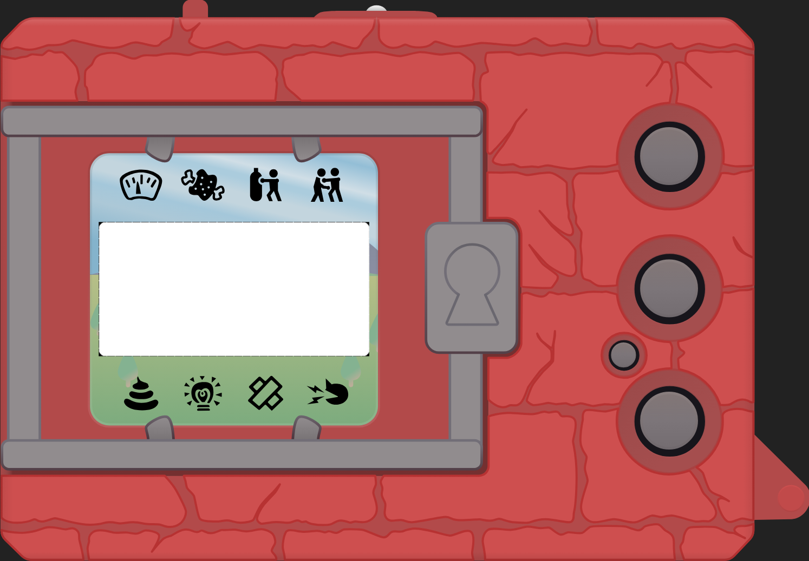

A 選擇：依序切換螢幕上下的七個功能圖示。
B 決定：執行已選的圖示。沒有選圖示時，B 會顯示時鐘。
C 取消：回到沒有選圖示的主畫面。
上排圖示是狀態、食物、訓練、對戰；下排是清掃、燈光、治療，最右邊的呼叫圖示只會在數碼寶貝需要你時亮起。
墳墓畫面同時按 A 和 C，或同時按 A 和 B，可以重新選擇數碼蛋。
進度會自動存在這台裝置的瀏覽器裡，綁的是這個網址。可用「匯出存檔」得到一組代碼或 QR，到另一台裝置「匯入」。換手機或清除網站資料前，請先匯出。
遊戲畫面開著時，可用「走路計步」靠搖晃累積步數。iPhone 也可以用「捷徑」從「健康」讀取今天的步數，每次打開就會更新。詳細設定見「步數捷徑說明」。
在對戰圖示裡選「連線」，或從這個選單進入。一方發出邀請碼（文字或 QR），對方接受後會得到結果碼，再傳回給發起方套用。對戰結果會計入這隻數碼寶貝的勝率。
iPhone 7 請用 Safari 的「加入主畫面」。較新的 iPhone（iOS 16.4 以上）在 Chrome 分享選單裡也可以加入。Android 用 Chrome 的「安裝應用程式」。
時間速度（除錯用；原機為即時 ×1。僅在網址加上 ?debug=1 時顯示。）
按鍵音效
點一顆蛋開始育成。
一方按「發出邀請」把邀請碼給對方；對方貼上後按「接受邀請」會得到結果碼，再傳回給發起方按「套用結果」。
把這串存檔碼或 QR 碼拿到另一台裝置匯入。請妥善保管，任何人拿到都能讀取你的進度。
貼上存檔碼，或用相機掃描 QR。若已有進度，匯入前會再確認一次。
網址列右側會出現「安裝」圖示，或到瀏覽器選單選擇「安裝數碼怪獸對打機」。
需要以 HTTPS（或本機 localhost）開啟，服務工作執行緒才能快取資源並離線遊玩。相機掃描 QR 同樣需要 HTTPS 與權限。
從 iPhone「健康」讀取今天的步數。剛才這次打開時可以同步；之後回到遊戲（從背景喚醒或切換畫面）不會再跳出這個提示。只會計算比上次增加的部分，不會重複計算。
建議把捷徑「數碼寶貝步數」放到主畫面，從那個圖示進入遊戲，就會先讀步數再打開。
iPhone 的網頁不能自己讀「健康」的步數，要靠內建的「捷徑」App 代為讀取，再打開遊戲網址。捷徑名稱必須剛好是「數碼寶貝步數」，遊戲裡的「同步步數」才找得到它。
yyyy-MM-dd。https://a307625.github.io/digivice/index.html?steps=然後插入上一步的步數變數，接著打 &date=，再插入格式化後的日期。第一次執行會跳出「健康」權限，請允許讀取「步數」。然後到捷徑的詳細資料選「加入主畫面」，之後每次從這個圖示進入就會先同步步數。
更完整、對照 iOS 15 繁體中文介面的逐步說明，請看遊戲專案裡的 shortcut-setup.md。